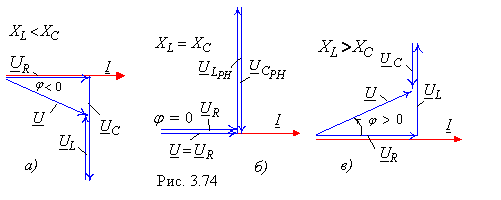
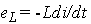
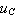
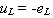

2.7.2.5. Векторные диаграммы
 Замечаем, что векторы напряжения на индуктивном UL и ёмкостном UC элементах при РН (рис. 2.74, б) больше вектора входного напряжения U. Причиной возникновения больших напряжений на реактивных элементах при РН является ЭДС самоиндукции  индуктивной катушки, которая пропорциональна не току, а скорости его изменения. Напряжение на ёмкостном элементе  при РН компенсирует напряжение  на индуктивном элементе. Поэтому для источника энергии контур - чисто резистивная нагрузка. |